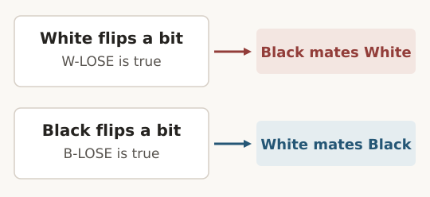
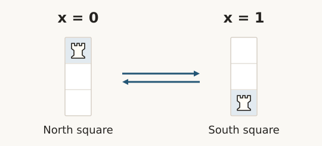
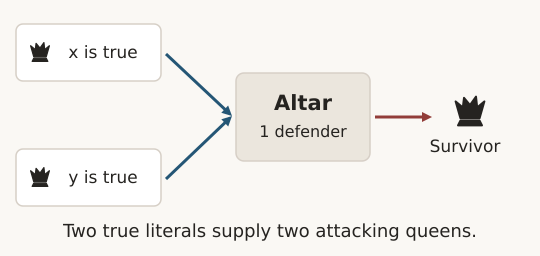
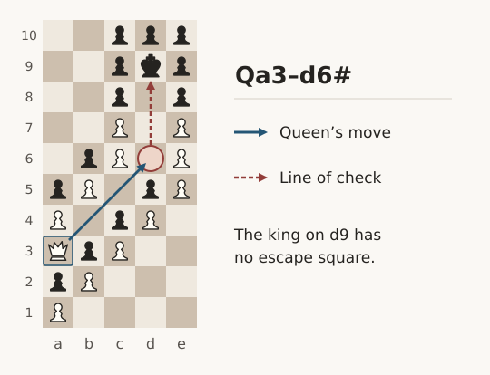
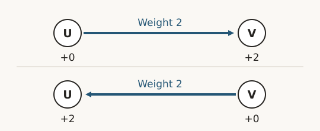
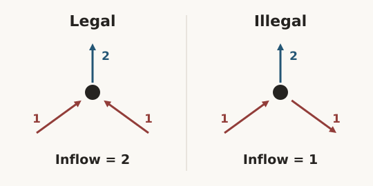
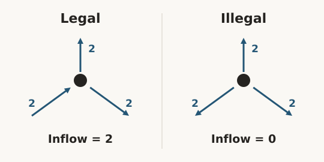
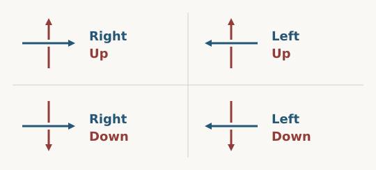

Abstract
Suppose I hand you a chess position on a board of any size. Can White force checkmate, however Black replies? In 1981, Aviezri Fraenkel and David Lichtenstein proved that this question is EXPTIME-complete for generalized chess. One half of the proof counts positions. The other turns a game played with Boolean variables into a chess position with the same winner.
One detail makes that translation worth following. A rook stores a bit simply by resting on one of two squares. But what stops its owner from leaving it halfway between them? Answering that chess question is part of what makes the complexity proof work.
The forced-win problem
Given an explicitly described n × n generalized chess position and the side to move, deciding whether White can force checkmate is EXPTIME-complete. [1]
Here n can grow. Each side has one king, the number of other pieces can grow with the board, and pieces move as in chess. The input gives the starting position directly. The proof can therefore use a board full of queens and rooks without showing how to reach it from an opening. The model allows reversible play to continue without a move-count draw limit. A stalemate or an endless sequence of moves earns White no win.
“Force” changes the question. Imagine White can give check and Black has exactly two legal replies. One allows mate on the next move. The other draws. White has found a mating line, but Black chooses the reply. To prove that the check wins, White must cover both replies. At a White turn one winning choice suffices. At a Black turn every legal reply must still lead to a White win.
How to solve the position graph
Start at checkmate and work backward
Draw one node for each game state and an arrow for each legal move. Include the side to move and any move rights that affect the next turn. Two different move sequences can reach the same node. This is what makes a graph more useful here than a tree of move histories.
- Mark every state in which Black is already checkmated. Call this first set W0.
- Keep the existing marks. Add a White-to-move state if at least one move reaches the previous set. Add a Black-to-move state if Black has at least one legal move and every legal reply reaches the previous set.
- Repeat until a round adds nothing. White can force mate exactly from the marked states.
The marks tell you how long a win takes. A state first marked in round two guarantees mate within two plies, where a ply is one move by one player. From an unmarked White state every move stays outside the final set. From an unmarked, nonterminal Black state, Black has a reply that stays outside. That is enough to avoid White’s goal. The legal-move check in step two keeps stalemate out of the win set.
Each square has at most 13 contents, counting an empty square and six piece types in each color. The board alone has at most 13n² arrangements. Including turn and rule-relevant state still gives at most N = 2poly(m) states for an explicitly encoded input of length m. Every round that changes the set marks at least one new state. Even rescanning the graph for each of at most N such rounds takes deterministic exponential time in m. This proves membership in EXPTIME.
The same argument using alternation
An alternating machine chooses one legal move at a White node and branches over all legal replies at a Black node. Give each branch a counter initialized to an upper bound on the number of states. Check terminal outcomes first, and reject a branch if its counter runs out before mate. The round argument justifies the cutoff. Every forced win has a strategy that reaches a lower-numbered round at each ply.
Storing the current board and a binary counter costs polynomial space, even when the counter holds an exponential number. Chandra, Kozen, and Stockmeyer proved that alternating polynomial space equals deterministic exponential time, written APSPACE = EXPTIME. [2]
What a move limit changes
Suppose instead that White must mate within k plies, with k polynomial in input length. A deterministic depth-first search can keep one branch of length k, try the replies in turn, and reuse its memory. That proves a PSPACE upper bound for the bounded question. Establishing hardness requires a separate reduction.
A Boolean game you can play by hand
The source of the lower bound is G3, a game of perfect information. White and Black own disjoint sets of bits, and both can see the assignment. On each turn, the mover must flip exactly one of their own bits. Then they evaluate their own losing formula. If it is true, they lose immediately. Each losing formula is an OR of terms, each term an AND of at most twelve literals. A literal is a bit or its negation. Stockmeyer and Chandra proved the forced-win decision problem EXPTIME-complete. [3]
Try a three-bit position. White owns x and z. Black owns y. White loses after a White move if x ∧ y is true. Black loses after a Black move if z ∧ ¬y is true. Start with x = 0, z = 0 and y = 1. Which bit should White flip?
| White flips | White’s test | What happens |
|---|---|---|
| x to 1 | 1 ∧ 1 = 1 | White loses immediately. |
| z to 1 | 0 ∧ 1 = 0 | Black must flip y to 0. Now z ∧ ¬y = 1, so Black loses. |
White can force a win by flipping z. A chess reduction must preserve both outcomes. Moving one rook should expose White’s king to a winning attack. Moving a different rook should force Black into danger instead.
How the chessboard simulates the game
Fraenkel and Lichtenstein construct a board from the variables and terms in a G3 instance. During normal play each player switches one of their rooks. Once a player makes a losing term true, the opponent can commit queens to an attack. Read Figure 1 from the player who just moved across to the side that can now deliver mate. [1, §§2–4]

One rook stores one bit
Inside a White Boolean controller, the white rook’s north resting square represents 0 and its south square represents 1. Moving between them flips x. The controller also contains a queen of each color. The rook’s location determines which literal routes the queens can safely use when an attack begins. Black’s controller is the color-swapped, rotated counterpart.

How two queens test an AND
Return to White’s losing move in our example. After White flips x, both x and y are true. Each true literal gives a different black queen a safe route into the channel for the term x ∧ y. The routes meet at the altar, where a white pawn is backed by one white bishop. When the first queen takes the pawn, the bishop can take that queen. The second queen can take the bishop and continue. With only one queen, White can stop the attack there.

Why a player cannot attack early
As soon as Black sends the first queen away, a white queen can enter a clock channel and race toward Black’s king. In the paper’s timing calculation for a true term, each side needs the same number of its own moves to mate. Black moved first in the race and delivers mate one ply ahead. A premature attack lacks that guarantee. White can start the clock, take queens at the altar when possible, and win the race.
Now return to the rook halfway between its resting squares. Such a move can appear to make both x and ¬x available. The paper checks the actual squares. On one intersection the black queen can take the rook herself. At other intermediate stops a black pawn can take it, with a clock route available in the ensuing play. These are legal chess moves whose consequences make the false encoding unprofitable. [1, §4, I.A(ii)]

The construction takes polynomial time in the description of the Boolean game. The routing and timing arguments give the equivalence the reduction needs. White can force a win on the constructed board exactly when White can force a win in the original game. An exact chess solver could therefore decide every instance of G3. This proves EXPTIME-hardness. The position-graph algorithm gives the other half of completeness.
Constraint logic and a possible second proof
Can a smaller set of gadgets explain the same lower bound? Demaine and Hearn’s two-player constraint logic (2CL) offers a candidate starting point. The players take turns reversing edges they own. A reversal must preserve the required incoming weight at each vertex. Each player wins by reversing their own designated target edge. The unbounded two-player game is EXPTIME-complete. [5]
The next four drawings specify behavior a chess construction would have to reproduce. Read the arrows as edge orientations. A number gives an edge’s weight, and its arrowhead points to the endpoint that receives it. Ownership is a separate part of the game.




Consider Figure 6 as a test for a proposed chess position. Can the owner reverse the weight-two edge when both light edges point in? If a light edge later turns outward, which chess reply punishes that move? Can a queen in a neighboring gadget interfere with the reply? A proof needs explicit piece placements and answers that survive connecting the gadgets, including whose turn comes next and how each target edge leads to mate. The diagrams leave those questions open. The established lower bound above uses G3.
What follows for ordinary chess?
The deterministic time hierarchy gives P ⊊ EXPTIME. If a polynomial-time algorithm solved every generalized chess position exactly, the reduction would put every EXPTIME problem in P. So the lower bound is unconditional, even while P versus NP remains open.
A different question faces an engine with two seconds to move on an 8 × 8 board. A better evaluation can help it choose a stronger move under that limit. An opening book can recall a studied line. An endgame tablebase can give an exact result for a covered position. The theorem predicts neither the gain from improving an engine nor the difficulty of this particular position. Its input is an entire growing family of boards, and its guarantee ranges over every legal reply.
Other games
Generalized checkers offers a particularly clean comparison. Robson proved an EXPTIME-completeness result for the growing-board game. Schaeffer and colleagues later established that perfect play from the ordinary starting position leads to a draw. Those results answer different questions about the same game. [6, 7]
Generalized Othello gives a useful comparison in the other direction. Each placement fills an empty square, and consecutive passes end the game. That bounds the search depth polynomially. The PSPACE-hardness half of Iwata and Kasai’s completeness result comes from their separate reduction. Counting turns alone could only establish the upper bound. [8]
In Hex, a move permanently claims one empty cell, and generalized Hex is also PSPACE-complete. In Go, captures can clear intersections for later play, and the repetition rule becomes part of the problem definition. Robson’s EXPTIME-completeness result applies to generalized Go with the simple ko rule. [9, 10]
References
- A. S. Fraenkel and D. Lichtenstein (1981). Computing a perfect strategy for n × n chess requires time exponential in n. Journal of Combinatorial Theory, Series A 31, 199–214. Article · Full text and board diagrams
- A. K. Chandra, D. C. Kozen, and L. J. Stockmeyer (1981). Alternation. Journal of the ACM 28, 114–133. Article
- L. J. Stockmeyer and A. K. Chandra (1979). Provably difficult combinatorial games. SIAM Journal on Computing 8, 151–174. Article
- Z. Zhang (2022). A note on the computational complexity of selfmate and reflexmate chess problems. Figure 4 gives the mating region redrawn here. Paper and diagram
- E. D. Demaine and R. A. Hearn (2008). Constraint Logic: A Uniform Framework for Modeling Computation as Games. IEEE Conference on Computational Complexity, 149–162. Paper
- J. M. Robson (1984). N by N Checkers is Exptime Complete. SIAM Journal on Computing 13, 252–267. Article
- J. Schaeffer et al. (2007). Checkers is solved. Science 317, 1518–1522. Article
- S. Iwata and T. Kasai (1994). The Othello game on an n × n board is PSPACE-complete. Theoretical Computer Science 123, 329–340. Article
- S. Reisch (1981). Hex ist PSPACE-vollständig. Acta Informatica 15, 167–191. Article
- J. M. Robson (1983). The complexity of Go. Information Processing 83, 413–417. MIT lecture on the rules and result